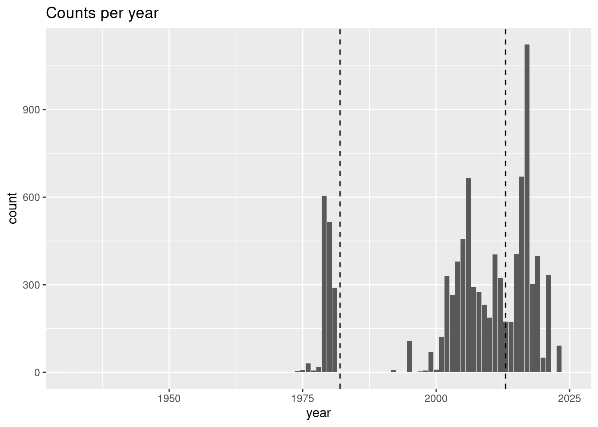
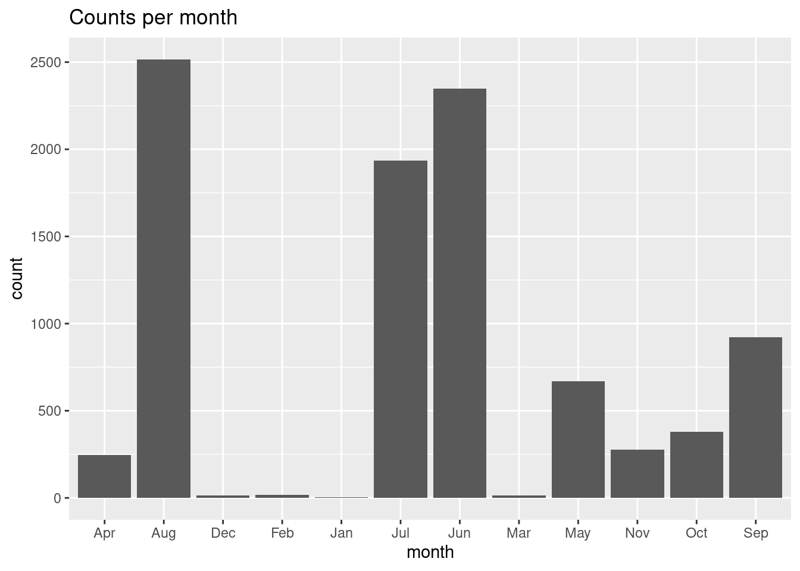
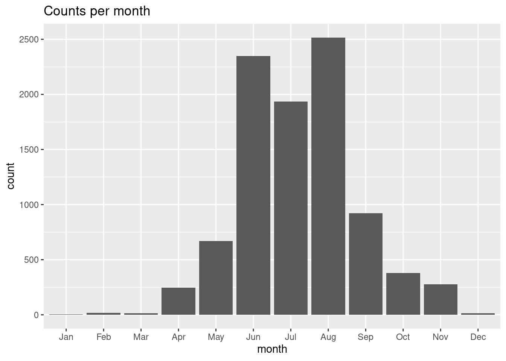
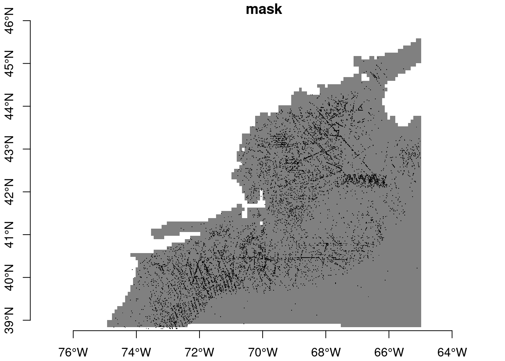

source("setup.R")
SPECIES = "Mola mola"Observations
1 Obtaining observational data
Follow this wiki page on obtaining data from OBIS. Keep in mind that you will probably want a species with sufficient number of records in the northwest Atlantic. Just what constitutes “sufficient” is probably subject to some debate, but a couple of hundred as a minumum will be helpful for learning. One thing that might help is to be on alert species that are only congregate in one area such as right along the shoreline or only appear in a few months of the year. It isn’t that those species are not worthy of study, but they may make the learning process harder.
You should feel free to get the data for a couple of different species, if one becomes a headache with our given resources, then you can switch easily to another.
2 What we need
We need a dataset that covers the same area and time period that the Brickman data covers. We need to have some confidence that the observations are of living creatures in their natural habitat. OBIS serves a curated data set, but that doesn’t mean it doesn’t have errors and it certainly doesn’t mean it is properly vetted for our purposes. What follows is a tour through your data with a series of pauses to look at different variables in your data set. At some of these pauses, we may decide to drop some records which will make the data set shrink in size.
3 Tour of your data
It is SO IMPORTANT to have a really good handle on your data. To get that handle you have to explore it. There is a branch of data science devoted to data exploration called Exploratory Data Analysis. We’ll explore your data here, but we assume that you have reviewed and tried your hand with the examples in the wiki for tabular data, observations, the coastlines and the Brickman data. Even if you have walked through these tutorials you may find yourself stumped and stymied. That’s all part of the learning process - just keep moving, inquiring and trying.
4 Setup
As always, we start by running our setup function. Start RStudio/R, and relaod your project with the menu File > Recent Projects. Then source setup.R. We’ll also assign a new variable with our species name - we do that so it’s easy to substitute in another species if needed. We make it ALL CAPS so that it reminds us that it is more like a constant than a variable.
5 Observations
Next is to read in the observations you have already downloaded for that species.
obs = read_obis(SPECIES)
obsSimple feature collection with 9663 features and 7 fields
Geometry type: POINT
Dimension: XY
Bounding box: xmin: -74.70772 ymin: 38.8 xmax: -65.00391 ymax: 45.1333
Geodetic CRS: WGS 84
# A tibble: 9,663 × 8
id basisOfRecord eventDate year month eventTime individualCount
* <chr> <chr> <date> <dbl> <chr> <chr> <dbl>
1 00026c58-b8a1… HumanObserva… 1980-06-06 1980 Jun 10:10:00 1
2 0002d1eb-d5ab… HumanObserva… 2016-06-28 2016 Jun 13:45:41 1
3 00079e04-1682… HumanObserva… 2016-08-03 2016 Aug 15:58:00 1
4 00086bc0-d5f9… HumanObserva… 2017-11-28 2017 Nov 13:28:26 1
5 000936b8-54f4… HumanObserva… 2004-06-23 2004 Jun 16:27:57Z 7
6 001796b0-be4e… HumanObserva… 2017-05-04 2017 May 13:47:59 1
7 0018582d-ff61… HumanObserva… 2007-08-22 2007 Aug 16:01:42 1
8 001d4e09-7398… HumanObserva… 2005-07-23 2005 Jul <NA> 1
9 0022f0d8-fa8a… HumanObserva… 1980-05-23 1980 May 09:35:00 1
10 00262ef4-6d80… HumanObserva… 2015-06-27 2015 Jun 14:01:19Z 1
# ℹ 9,653 more rows
# ℹ 1 more variable: geom <POINT [°]>The print out of the table only shows the first 10 rows (so your screen doesn’t get filled up), and it tells you how many records you have. A simple way to keep track of the number of records is to use the dim() functions which returns the number of rows and number of columns. I’m going to save the outout so we can compare after all of the filtering.
dim_start = dim(obs)
dim_start[1] 9663 85.1 basisOfRecord
Next we should examine the basisOfRecord variable to get an understanding of how these observations were made.
obs |> count(basisOfRecord)Simple feature collection with 4 features and 2 fields
Geometry type: GEOMETRY
Dimension: XY
Bounding box: xmin: -74.70772 ymin: 38.8 xmax: -65.00391 ymax: 45.1333
Geodetic CRS: WGS 84
# A tibble: 4 × 3
basisOfRecord n geom
* <chr> <int> <GEOMETRY [°]>
1 HumanObservation 9491 MULTIPOINT ((-65.07 42.68), (-65.067 42.65), (-6…
2 NomenclaturalChecklist 1 POINT (-65.80602 44.97985)
3 Occurrence 1 POINT (-65.2852 42.6243)
4 PreservedSpecimen 170 MULTIPOINT ((-67.05534 45.09908), (-66.35 45.133…If you are using a different species you may have different values for basisOfRecord. Let’s take a closer look at the complete records for one from each group.
human = obs |>
filter(basisOfRecord == "HumanObservation") |>
slice(1) |>
browse_obis()Please point your browser to the following url: https://api.obis.org/v3/occurrence/00026c58-b8a1-401c-9a1c-b457cc8ca1dbpreserved = obs |>
filter(basisOfRecord == "PreservedSpecimen") |>
slice(1) |>
browse_obis()Please point your browser to the following url: https://api.obis.org/v3/occurrence/0093e48f-bef3-490a-9c24-10826c708bafchecklist = obs |>
filter(basisOfRecord == "NomenclaturalChecklist") |>
slice(1) |>
browse_obis()Please point your browser to the following url: https://api.obis.org/v3/occurrence/c52e8172-146e-4298-bbc3-fb382097d308occurrence = obs |>
filter(basisOfRecord == "Occurrence") |>
slice(1) |>
browse_obis()Please point your browser to the following url: https://api.obis.org/v3/occurrence/7f159a6a-9199-4985-8c99-17b30b04f75fNext let’s think about what our minimum requirements might be in order to build a model. To answer that we need to think about our environmental covariates in the Brickman data](https://github.com/BigelowLab/ColbyForecasting/wiki/Brickman). That data has dimensions of x (longitude), y (latitude) and month. In order to match obseravtions with that data, our observations must be complete in those three variables. Let’s take a look at a summary of the observations which will indicate the number of elements missing in each variable.
summary(obs) id basisOfRecord eventDate year
Length:9663 Length:9663 Min. :1932-09-15 Min. :1932
Class :character Class :character 1st Qu.:2004-06-04 1st Qu.:2004
Mode :character Mode :character Median :2009-07-26 Median :2009
Mean :2006-12-23 Mean :2006
3rd Qu.:2016-11-18 3rd Qu.:2016
Max. :2024-01-03 Max. :2024
NA's :7 NA's :7
month eventTime individualCount geom
Length:9663 Length:9663 Min. : 1.00 POINT :9663
Class :character Class :character 1st Qu.: 1.00 epsg:4326 : 0
Mode :character Mode :character Median : 1.00 +proj=long...: 0
Mean : 1.11
3rd Qu.: 1.00
Max. :25.00
NA's :318 5.2 eventDate
For Mola mola there are some rows where eventDate is NA. We need to filter those. The filter function looks for a vector of TRUE/FALSE values - one for each row. In our case, we test the eventDate column to see if it is NA, but then we reverse the TRUE/FALSE logical with the preceding ! (pronounded “bang!”). This we retain only the rows where eventDate is notNA`, and then we print the summary again.
obs = obs |>
filter(!is.na(eventDate))
summary(obs) id basisOfRecord eventDate year
Length:9656 Length:9656 Min. :1932-09-15 Min. :1932
Class :character Class :character 1st Qu.:2004-06-04 1st Qu.:2004
Mode :character Mode :character Median :2009-07-26 Median :2009
Mean :2006-12-23 Mean :2006
3rd Qu.:2016-11-18 3rd Qu.:2016
Max. :2024-01-03 Max. :2024
month eventTime individualCount geom
Length:9656 Length:9656 Min. : 1.00 POINT :9656
Class :character Class :character 1st Qu.: 1.00 epsg:4326 : 0
Mode :character Mode :character Median : 1.00 +proj=long...: 0
Mean : 1.11
3rd Qu.: 1.00
Max. :25.00
NA's :315 5.3 individualCount
That’s better, but we still have 315 NA values for individualCount. Let’s look at at least one record of those in detail; filter out one, and browse it.
obs |>
filter(is.na(individualCount)) |>
slice(1) |>
browse_obis()Please point your browser to the following url: https://api.obis.org/v3/occurrence/0027e671-6713-4299-9721-60834f0a5ae7What you find is, of course, dependent upon the species you have selected and any prior filtering steps you may have taken. Some may find that the observation is of a carcass, or possibly a keyboard entry error. How does one know without investigating each record. It quickly turns into a data quality investigation which can take a lot of time, but may be the most important step you take. In the interest of time for the class, we’ll simply filter those out of our observation dataset.
obs = obs |>
filter(!is.na(individualCount))
summary(obs) id basisOfRecord eventDate year
Length:9341 Length:9341 Min. :1932-09-15 Min. :1932
Class :character Class :character 1st Qu.:2003-09-24 1st Qu.:2003
Mode :character Mode :character Median :2009-07-20 Median :2009
Mean :2006-11-10 Mean :2006
3rd Qu.:2016-11-23 3rd Qu.:2016
Max. :2024-01-03 Max. :2024
month eventTime individualCount geom
Length:9341 Length:9341 Min. : 1.00 POINT :9341
Class :character Class :character 1st Qu.: 1.00 epsg:4326 : 0
Mode :character Mode :character Median : 1.00 +proj=long...: 0
Mean : 1.11
3rd Qu.: 1.00
Max. :25.00 Well now one has to wonder about a single observation of 25 animals. Let’s check that out.
obs |>
filter(individualCount == 25) |>
browse_obis()Please point your browser to the following url: https://api.obis.org/v3/occurrence/cdf4363d-f954-4810-b15f-24334b0e6907OK, that seems like a legitimate source, and and it is possible, Mola mola can congregate for feeding, mating and possibly for karaoke parties.
5.4 year
We know that the “current” climate scenario for the Brickman model data define “current” as the 1982-2013 window. It’s just an average, and if you have values from 1970 to the current year, you probably are safe in including them. But do your observations fall into those years? Let’s make a plot of the counts per year, with dashed lines shown the Brickman “current” cliamtology period.
ggplot(data = obs,
mapping = aes(x = year)) +
geom_bar() +
geom_vline(xintercept = c(1982, 2013), linetype = "dashed") +
labs(title = "Counts per year")
For this species, it seem like it is only the record from 1932 that might be a stretch, so let’s filter that out by rejecting records before 1970. This time, instead of asking for a sumamry, we’ll print the dimensions (rows, columns) of the table.
obs = obs |>
filter(year >= 1970)
dim(obs)[1] 9340 8That’s still a lot of records. Now let’s check out the distribution across the months of the year.
5.5 month
We will be making models and predictions for each month of the for the 4 future projection climates. Species and observers do show some seasonality, but it that seasonality so extreme that it might be impossible to model some months because of sparse data? Let’s make a plot of the counts per month.
ggplot(data = obs,
mapping = aes(x = month)) +
geom_bar() +
labs(title = "Counts per month")
Oh, rats! By default ggplot plots in alpha-numeric order, which scrambles our month order. To fix that we have to convert the month in a factor type while specifying the order of the factors, and we’ll use the mutate() function to help us. You can learn more about factors in this blog post
obs = obs |>
mutate(month = factor(month, levels = month.abb))
ggplot(data = obs,
mapping = aes(x = month)) +
geom_bar() +
labs(title = "Counts per month")
That’s better! So, it may be the for Mola mola we might not be able to successfully model in the cold winter months. That’s good to keep in mind.
5.6 geometry
Last, but certainly not least, we should consider the possibility that some observations might be on shore. It happens! We already know that some records included fish that were washed up on shore. It’s possible someone mis-keyed the longitude or latitude when entering the vaklues into the database. It’s alos possible that some observations fall just outside the areas where the Brickman data has values. To look for these points, we’ll load the Brickman mask (defines land vs water. Well, really it defines data vs no-data), and use that for further filtering.
We need to load the Brickman database, and then filter it for the static variable called “mask”.
db = brickman_database() |>
filter(scenario == "STATIC", var == "mask")
mask = read_brickman(db, add_depth = FALSE)
maskstars object with 2 dimensions and 1 attribute
attribute(s):
Min. 1st Qu. Median Mean 3rd Qu. Max. NA's
mask 1 1 1 1 1 1 4983
dimension(s):
from to offset delta refsys point x/y
x 1 121 -74.93 0.08226 WGS 84 FALSE [x]
y 1 89 46.08 -0.08226 WGS 84 FALSE [y]Let’s see what our mask looks like with the observations drizzled on top. Because the mask only has values of 1 (data) or NA (no-data). You’ll note that we only want to plot the locations of the observations, so we strip obs of everyhting except its geometery.
plot(mask, breaks = "equal", axes = TRUE, reset = FALSE)
plot(st_geometry(obs), pch = ".", add = TRUE)
Maybe with proper with squinting we can see some that fall into no-data areas. The sure-fire way to tell is to extract the mask values at the point locations.
hitOrMiss = extract_brickman(mask, obs)
hitOrMiss# A tibble: 9,340 × 3
point name value
<chr> <chr> <dbl>
1 p0001 mask 1
2 p0002 mask 1
3 p0003 mask 1
4 p0004 mask 1
5 p0005 mask 1
6 p0006 mask 1
7 p0007 mask 1
8 p0008 mask 1
9 p0009 mask 1
10 p0010 mask 1
# ℹ 9,330 more rowsOK, let’s tally the “value” variable.
count(hitOrMiss, value)# A tibble: 2 × 2
value n
<dbl> <int>
1 1 9307
2 NA 33Ooooo, a number of records in obs don’t line up with values in the mask (or in any Brickman data). We should filter those out; we’ll do so with a filter(). Note that we are reaching into the hitOrMiss table to access the value column when we use this hitOrMiss$value. Let’s figure out how many records we have dropped with all of this filtering.
dim_start = dim(obs)
obs = obs |>
filter(!is.na(hitOrMiss$value))
dim_end = dim(obs)
dropped_records = dim_start[1] - dim_end[1]
dropped_records[1] 33So, we dropped 33 records which is about 0.4% of the raw OBIS data. Is it worth all that to drop just 4% of the data? Yes! Models are like all things computer… if you put garbage in you should expect to get garbage back out.
6 Recap
We have explored a data set, in particular for Mola mola; your species may present you with unique challenges. Our goal is to winnow the original data set down to just the most reliable observations for modeling.
7 Coding Assignment
We went through many steps to filter out records that won’t help use model. We’ll need that filtered data many-many-many times in the days ahead. Wouldn’t it be nice if we could sweep all of those filtering steps into a single function, call it read_observations(), that simple took care of it all for us? Yes - that would be really nice!
Open the “read_observations.R” file you’ll find in the “functions” directory. We have started it for you. Edit the function so that it appropriately filters your species data set by adding optional arguments (like minimum_year has been added). And then adding the code steps needed to implement that filter.
Not every filter needs user input. For instance, eventDate can’t be NA, and all points must fall within the area covered by the Brickman data. So you can automatically add those filters without any user options.
On the other hand, filtering by basisOfRecord or individualCount might need more flexibility, especially if you might switch to other species.
Speaking of which, we provided scientificname with a default value - we chose “Mola mola” because we are a bit lazy. If you are feeling lazy, you can change the default to your own species.
As you build your function, pause every so often and run the following to test things out.
source("setup.R")
obs = read_observations()